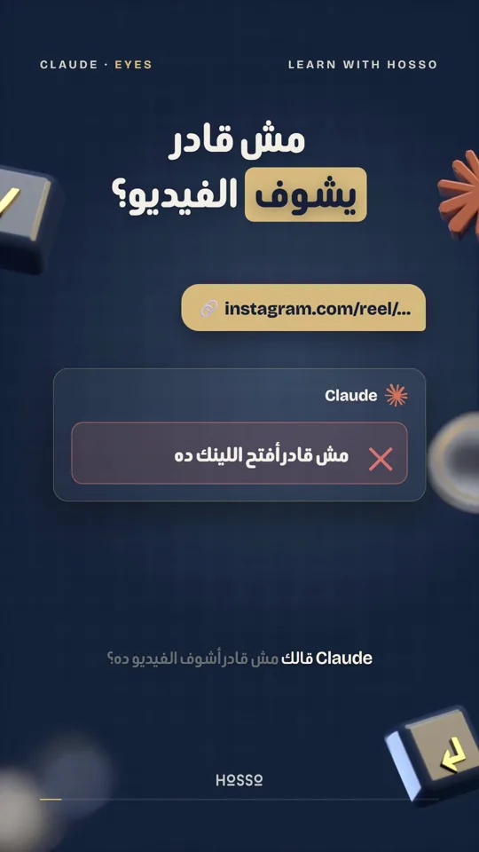
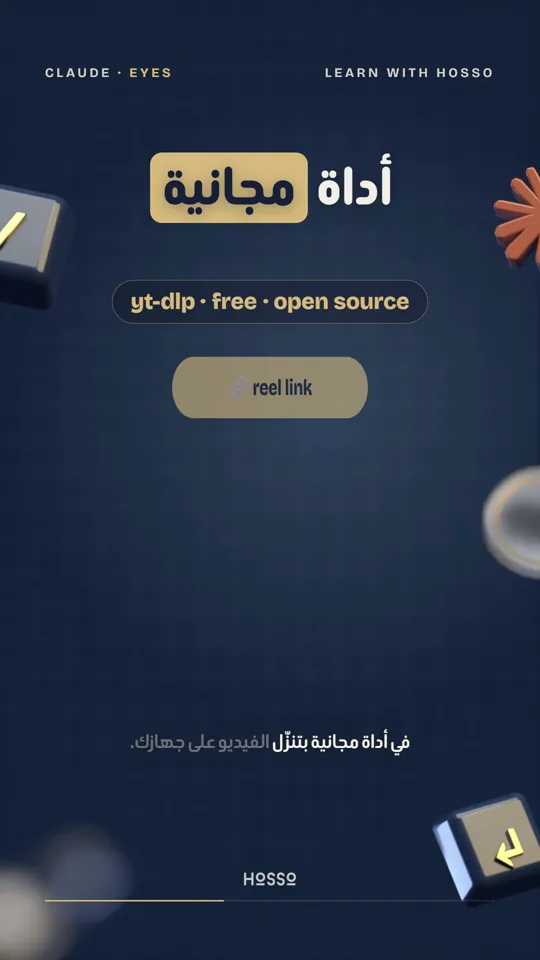
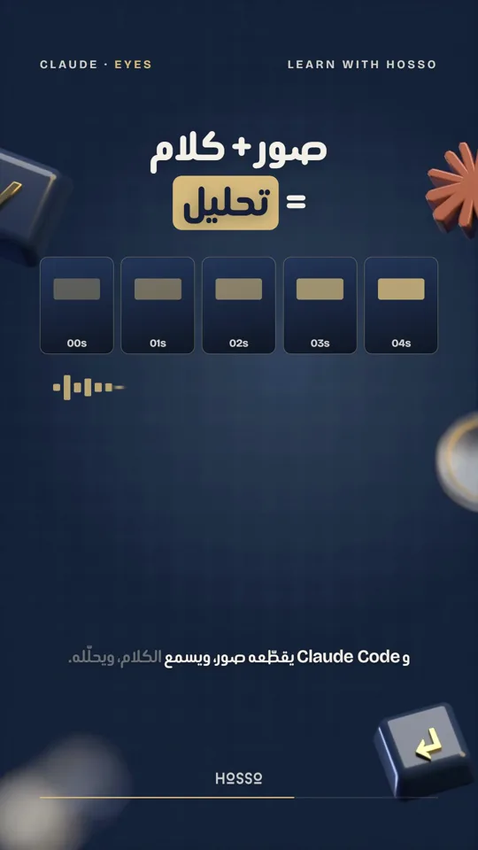
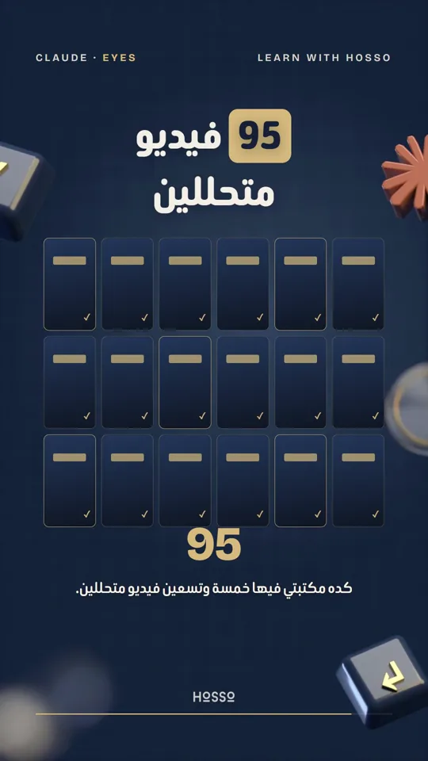

خلّي Claudeيشوف الفيديـــو
Claude مش بيقدر يفتح لينك ريل من انستجرام أو تيك توك. الحل إن الفيديو يبقى ملف على جهازك: أداة مجانية بتنزّله، وClaude Code يقطّعه صور ويكتب الكلام ويطلعلك التحليل. دي نفس الطريقة اللي حلّلت بيها 95 فيديو في مكتبتي.


- 01
ليه مش بيفتح اللينك
أغلب لينكات الريلز بتطلب تسجيل دخول، فـ Claude على الويب مش بيقدر يتفرج على الفيديو نفسه حتى لو معاه نت. لكن لو الفيديو بقى ملف على جهازك، Claude Code يقدر يشوفه صورة صورة ويقرا الكلام اللي فيه.

من الريل: Claude بيرفض لينك الريل - 02
اللي هتحتاجه
Claude Code على الكمبيوتر (محتاج اشتراك Claude). وتلات أدوات مجانية ومفتوحة المصدر: yt-dlp بينزّل الفيديو، وffmpeg بيقطّعه صور، وfaster-whisper بيكتب الكلام اللي فيه. مش لازم تسطّبهم بإيدك: قول لـ Claude Code «سطّبلي yt-dlp وffmpeg وfaster-whisper» وهو يمشي معاك خطوة خطوة.
yt-dlp على GitHub ↗ - 03
نزّل الفيديو
افتح Claude Code في فولدر فاضي، والصق الطلب ده وحط لينك الفيديو مكان اللي بين القوسين. لو الموقع طلب تسجيل دخول (زي انستجرام ساعات)، Claude Code هيقولك تعمل إيه. نزّل بس الفيديوهات اللي من حقك تتعلم منها.
نزّلي الفيديو ده بـ yt-dlp وسمّيه video.mp4: [لينك الفيديو]. لو احتاج تسجيل دخول قولّي أعمل إيه بالظبط.
من الريل: أداة مجانية بتنزّل الفيديو على جهازك - 04
قطّعه صور وكلام
دلوقتي خلّي Claude Code يحوّل الفيديو لحاجة يقدر يقراها: صور كل نص ثانية في شيت واحد، والكلام مكتوب في ملف.
قطّع video.mp4 لصور كل نص ثانية بـ ffmpeg وحطهم في شيت واحد sheet.jpg، واكتب الكلام اللي في الفيديو بـ faster-whisper (اللغة عربي) واحفظه في transcript.txt.
من الريل: صور + كلام = تحليل - 05
اطلب التحليل
لما الشيت والكلام يجهزوا، اطلب التحليل اللي يفيدك:
بص على sheet.jpg وtranscript.txt وطلّعلي: الهوك في أول 3 ثواني، عدد القطعات ورتمها، الكلام المكتوب على الشاشة، والـ CTA في الآخر، وليه الريل ده ممكن يكون نجح. وفي الآخر اكتبلي 3 أفكار أعمل بيها ريل بأسلوبي. - 06
ابني مكتبتك
احفظ كل فيديو في فولدر باسمه: الفيديو والشيت والكلام والتحليل. أنا مكتبتي فيها 95 فيديو متحللين بالطريقة دي، وبرجعلها قبل ما أكتب أي ريل جديد.

من الريل: مكتبتي فيها 95 فيديو متحللين
نصايح صغيرة
- نزّل وحلّل بس الفيديوهات اللي من حقك تتعلم منها، ومتعيدش نشر شغل حد تاني.
- faster-whisper بيشتغل على جهازك ببلاش، والفيديو الطويل بياخد وقت أطول.
- عايز مكتبة تحليل جاهزة لبراندك؟ ابعتلي على الواتساب.
عايز حد يعملهولك؟
مش فاضي تتعلم وتعمل بنفسك؟ أنا بعمل ريلز لبراندك بنفس الطريقة اللي بشرحها هنا.